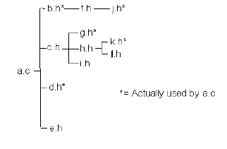

Simplifying a Source File’s Header Files
DIScover examines all the header files used by the selected source file, either directly or indirectly, then double-checks any dependencies between the header files, and finally identifies any that you do not need.
In the source file, DIScover comments out the header files you do not need, and replaces them, in proper order, with the ones you do need. This works even for files that are deeply nested.
For example, consider the following header files in a software project:

After running Simplify.h, the header section of file a.c resembles:
#include b.h
/* #include c.h */ /* Automatically commented out */
#include g.h
#include k.h
#include d.h
/* #include e.h */ /* Automatically commented out */
DIScover comments out c.h, which is not used directly by a.c, but has added g.h and k.h, which were formerly indirectly included through c.h. Indirectly included files h.h, i.h, and l.h are no longer included since they do not matter.
The unused include file e.h is simply commented out.
DIScover automatically reduces the number of unnecessary include files in a.c from six to one (f.h).
Related Topics